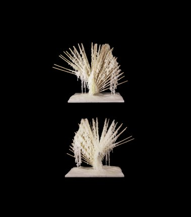
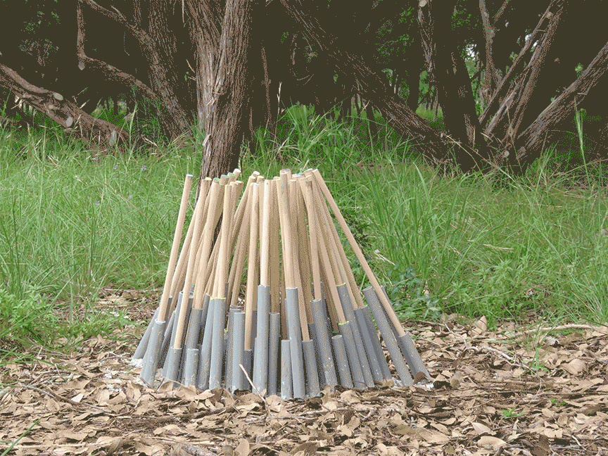
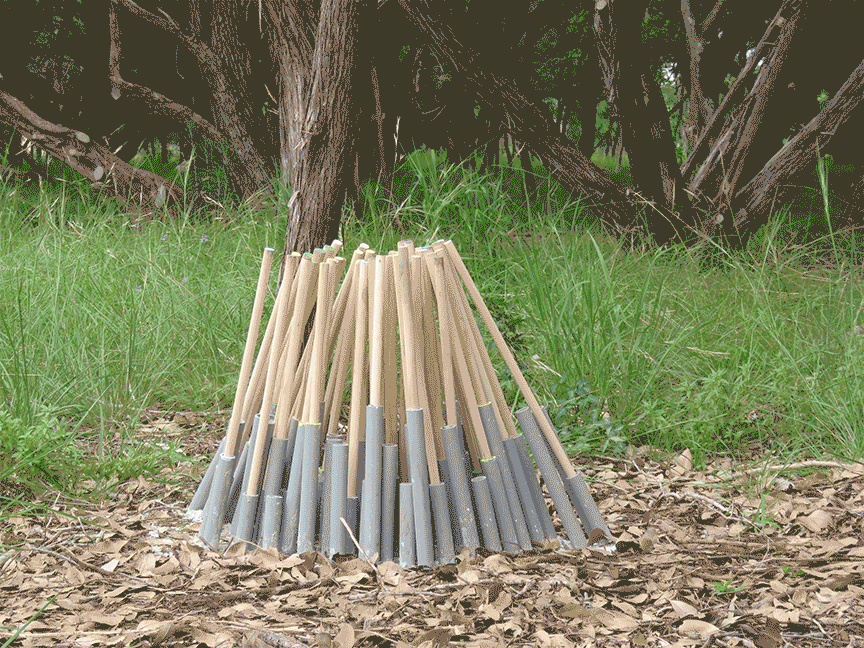

Acupuncture
Prototype -- Igor Siddiqui Fall 2014

In an age of digital fabrication, 3D printers allow for mass customization of product parts. However, this manufacturing technique has limitations due to the setup needed for production. Common fused deposition modeling restricts the dimensions of printed pieces by the size of the printing bed. To bypass this problem, designs commonly breakdown larger objects into modular components.
Architects have historically designed stools to test ideas of fabrication. With this stool, Acupuncture proposes that one component of reasonable size could be used to generate a larger product with the same level of customization throughout. It takes the approach of constructing a product outward rather than building within a scaffold. One precisely-made plug translates the accuracy of a digital model into the entire physical output as an extension growing out of a base. Initial studies use a small 3D print to support wood dowels coated in wax. Subsequent iterations of the stool recreate the accuracy of a 3D printer with minimal machine aid. In the final iteration, the plug changes to layered sheets with drilled holes, altering the placement depending on the digital definition, and extruded PVC supports an extension of dowels to form a seat.
 
